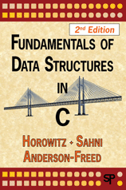
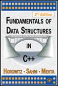
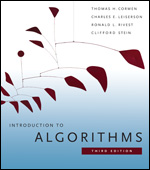
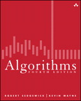
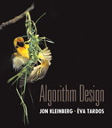
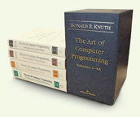

基礎演算法書籍
資料結構書籍
|  |  | Fundamentals of Data Structures in C++ Ellis Horowitz, Sartaj Sahni, Dinesh Mehta. Silicon Press http://www.silicon-press.com/books/isbn.0-929306-37-6/index.html http://www.silicon-press.com/books/isbn.9780929306407/index.html |
這是一本談論資料結構的書，並有少量演算法。此書內容以文字敘述和虛擬碼居多，示意圖稍嫌不足，需要痛下苦工才能讀通。
這本書同時出版C、C++兩種版本，讀者可以擇一學習。
這本書的初版，是由別家出版社出版的，是精裝本，除了C、C++還有Pascal版本。目前初版已絕版。
這本書有繁體中文譯本。
演算法書籍
|  | Introduction to Algorithms Thomas H. Cormen, Charles E. Leiserson, Ronald L. Rivest, Clifford Stein. The MIT Press http://mitpress.mit.edu/algorithms/ |
這是一本談論演算法的書，介紹了演算法的先備知識、基本概念；揀選了大量的、基礎的演算法作為教學範例，並且分析的相當透徹；提出幾個演算法設計方法，並以專門章節詳加介紹，書中也隨處可見到這些設計方法。
此書是世界上各大專院校的演算法課程主要用書，為當代的演算法教學聖經。
這本書的前一版有繁體中文譯本。
演算法書籍
|  | Algorithms Robert Sedgewick and Kevin Wayne Addison-Wesley Professional http://algs4.cs.princeton.edu/home/ |
介紹實用的、基本的資料結構與演算法，分類清楚、說明詳盡、圖例豐富，是一本好書！
演算法書籍
|  | Algorithm Design Jon Kleinberg and Éva Tardos Addison Wesley http://www.aw-bc.com/info/kleinberg/ |
以演算法設計技巧為主體，介紹各種基礎演算法。內容著重於解題思路，屏除複雜的數學證明，富有教育意義。
http://www.cs.princeton.edu/~wayne/kleinberg-tardos/
演算法書籍
 | The Algorithm Design Manual Steven S. Skiena. Telos/Springer-Verlag http://www.algorist.com/ |
這本書是一本演算法索引手冊，整理方式是首開先例！前半部依照演算法設計方式，將一些常見的問題做分類；後半部則是列舉出各領域的一些經典問題。書中詳細地交代每個問題的發展情況、參考文獻，對研究很有幫助。
另外這本書的網站上面有許多可貴的資料，可以參考看看。
演算法書籍
|  | The Art of Computer Programming Donald E. Knuth Addison-Wesley http://www-cs-faculty.stanford.edu/~knuth/taocp.html |
高德納老先生正在編纂第四冊，讓我們拭目以待！